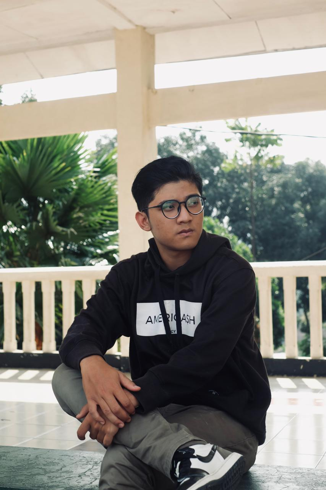

Profile

Clik Me
Badminton, gitar, dan buku-buku adalah tiga hal yang tak pernah lepas dari Naufal Hidayah Tulloh. Seorang pemuda yang haus akan pengetahuan dan pengalaman baru, Naufal menemukan kedamaian dalam setiap pukulan shuttlecock, setiap nada gitar yang dimainkan, dan setiap kata yang dibaca. Dengan semangat yang membara, Naufal terus menjelajahi dunia ilmu pengetahuan, siap untuk mengejutkan dirinya sendiri dengan penemuan-penemuan baru.